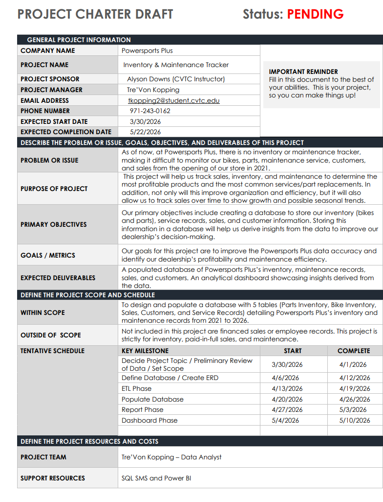
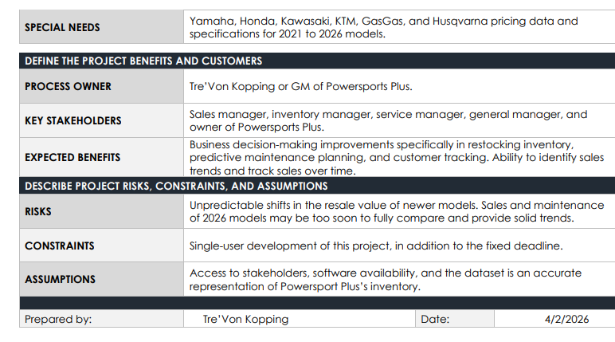
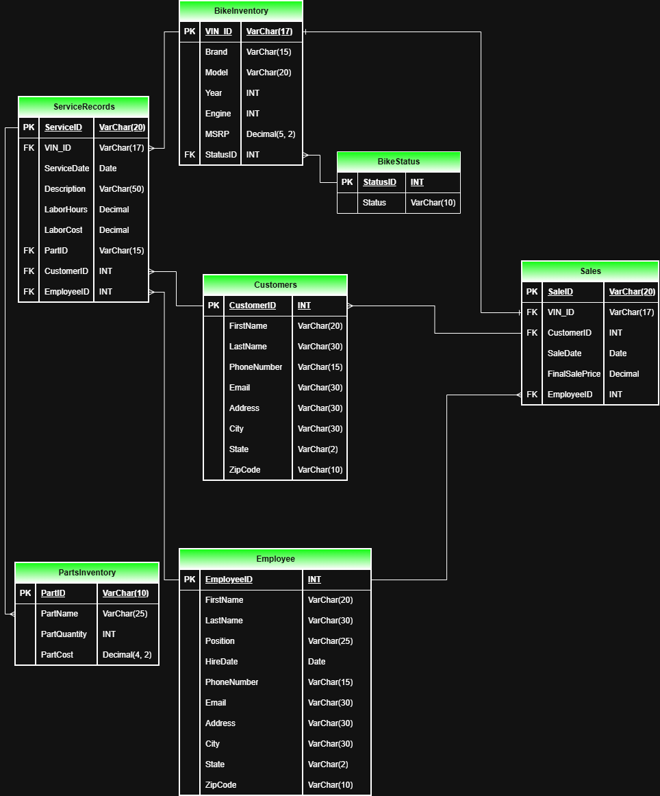
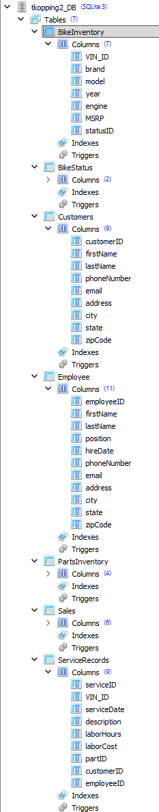
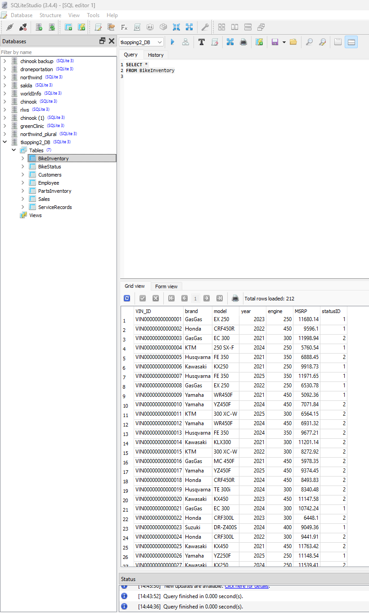
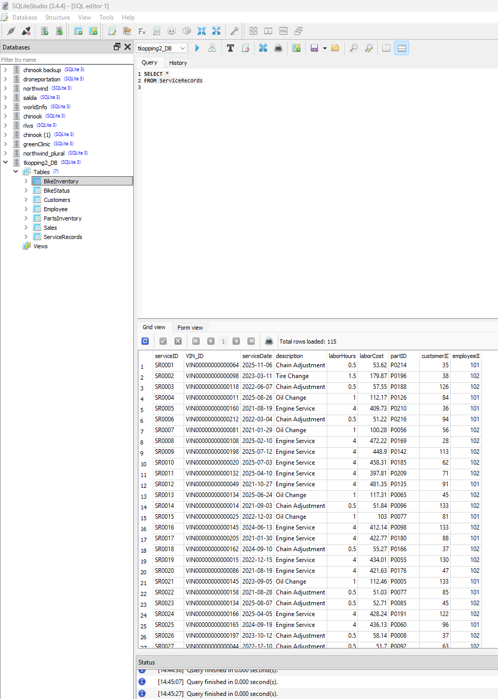
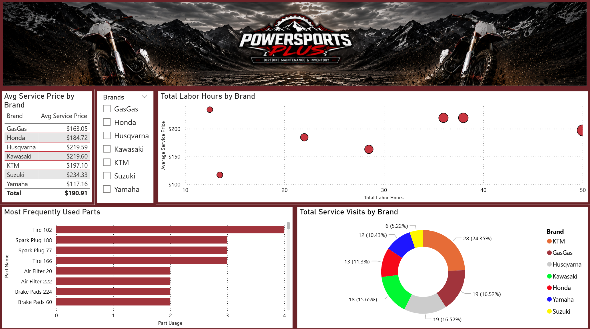
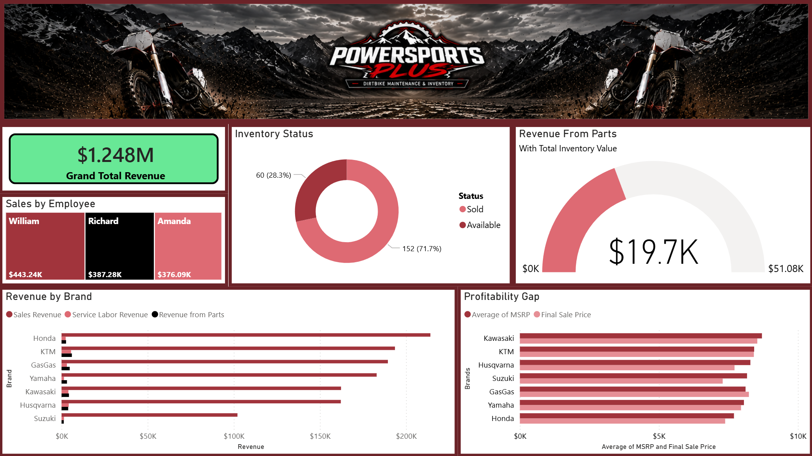
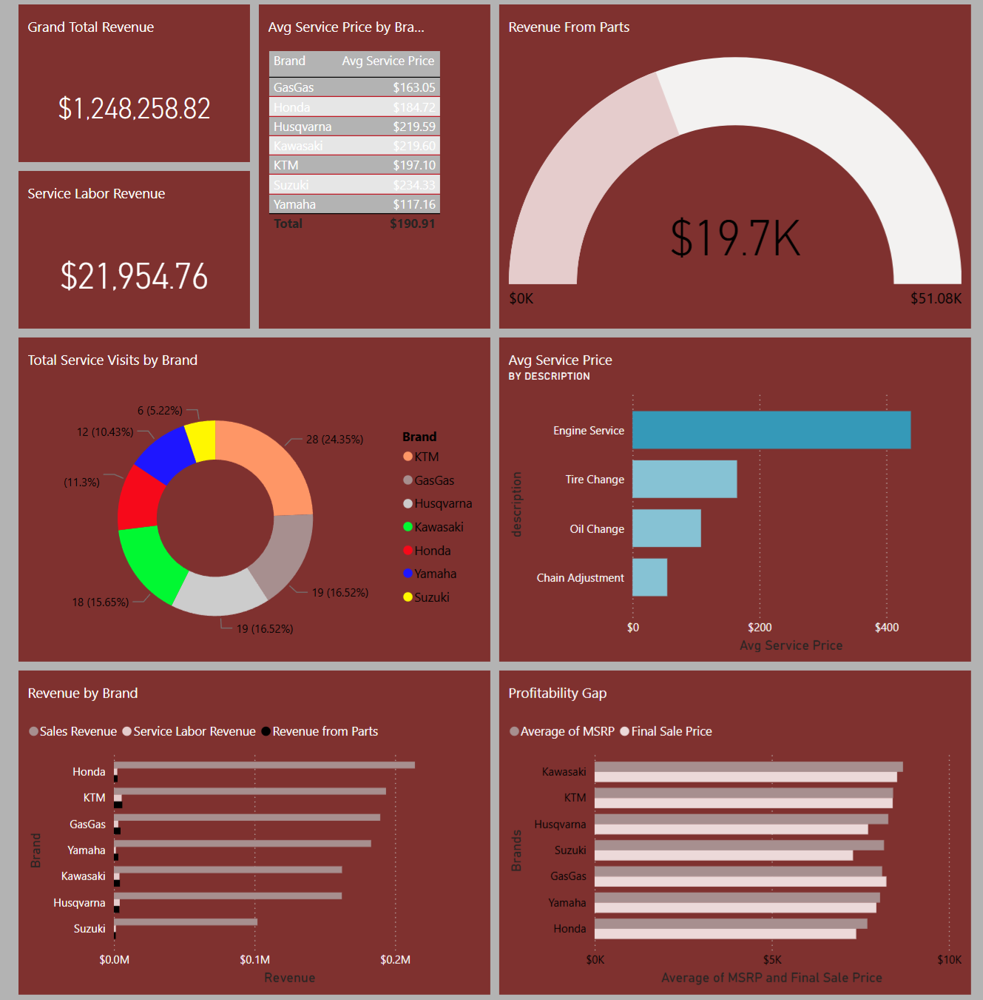

Powersports Inventory & Maintenance Tracker
This Capstone project serves as the culmination of my Data Analyst journey at CVTC, synthesizing core competencies in database architecture, ETL processes, and data visualization. I developed a reporting system for a Powersports dealership to track maintenance, bike and part inventory, sales performance, and employee productivity.
The initial phase of the project involved drafting a formal charter to define the scope, timeline, and specific KPIs for measuring the system's success upon deployment.


Prior to database construction, I created an ERD diagram. This diagram defines field names, data types, primary/foreign key relationships, and cardinalities to ensure data integrity.

Once I completed my ERD diagram, I then created the database with the tables, primary keys, and foreign keys that matched my ERD. After the database was created, I populated it with data to use for my capstone project.



With the database created and the tables populated, I was then able to connect the database to Power BI Desktop to begin building my reports. I validated the column data types, ensured there were no null values, and checked the table connections, as they can be misinterpreted when connecting the database to Power BI Desktop. From there, I made a few measures for my visuals and then produced a maintenance report and a sales report.


Finally, I published both my maintenance report and sales report to Power BI Service to build my final executive dashboard. I added KPIs to highlight trends and patterns within the data to produce a final dashboard showcasing key findings.

← Back to Projects Portfolio